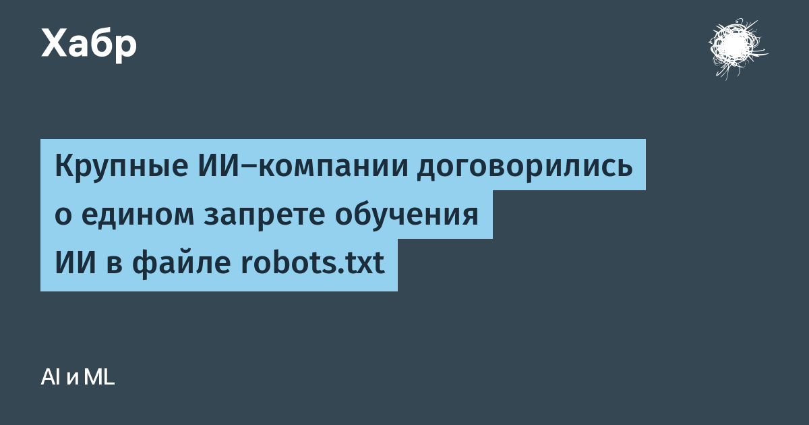

Google в официальном блоге Search Central объявил о планах поддержать единый механизм управления обучением ИИ в robots.txt. Идея проста: вместо отдельных запретов для каждого разработчика (GPTBot, ClaudeBot, Google-Extended и десятки других) владелец сайта указывает в файле общий «маркер политики» — policy token, — и все участвующие в системе провайдеры считают контент закрытым для обучения. В инициативу, помимо Google, уже вписались OpenAI, Microsoft и Anthropic.
Если сайт запретил обучение общим маркером, а директива Google-Extended не задана отдельно, Google будет трактовать это как отказ от обучения — так же смогут поступать и другие разработчики. При этом старые адресные controls никуда не деваются: можно задать общий запрет для всех, а для отдельной компании сделать исключение. Отдельный пряник для издателей: сайты, явно разрешившие Google-Extended, получают право появляться в ответах Gemini с переходрами пользователей — так называемый grounding.
Механизм опирается на работу группы AIPREF в Инженерном совете Интернета (IETF) и совпадает с Кодексом практики для поставщиков моделей общего назначения в рамках ЕС-овского AI Act, где robots.txt уже признан основным машиночитаемым способом выразить отказ. Google подчёркивает, что предложение учитывает пожелания издателей, общественных организаций и регуляторов, а дорабатывать стандарт будут сообща через IETF. Внедрение вместе с другими ИИ-провайдерами запланировано на 2027 год.
Для небольших сайтов и авторов это первый за годы реальный рычаг: раньше robots.txt защищал только от поисковых роботов, а обходные краулеры ИИ калибровали правила на глаз. Правда, пока это декларация о намерениях — маркер не имеет юридической силы и держится на доброй воле крупных компаний. Но когда одну и ту же строку обещают соблюдать сразу четыре ведущих игрока, у неучастиков становится меньше шансов остаться в выигрыше от свинства.